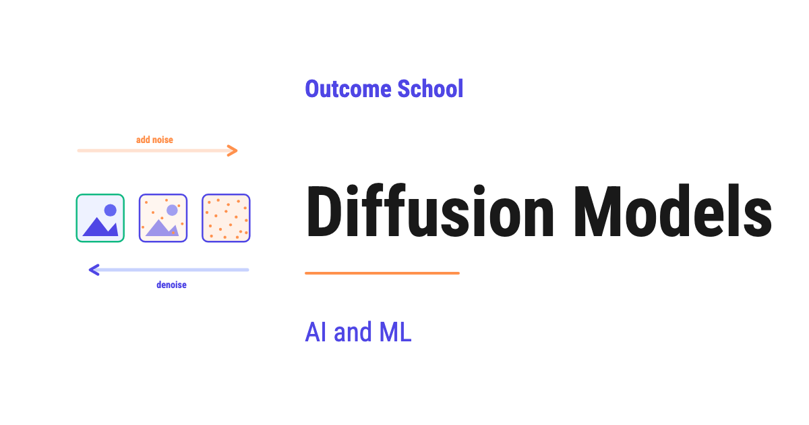

What are Diffusion Models and How Do They Generate Images?
On this page
- What is a Diffusion Model?
- Why do we need Diffusion Models?
- The two processes: Forward and Reverse
- The Forward Process (adding noise)
- The Reverse Process (removing noise)
- A step-by-step example walk-through
- How the model is trained
- A simple code example
- Conditional Diffusion (text to image)
- Advantages of Diffusion Models
- Where Diffusion Models are used
- Frequently Asked Questions

A Diffusion Model is a type of AI model that creates new data, such as images, by starting from pure random noise and slowly cleaning it up step by step until a clear image appears.
In this blog, we will learn about Diffusion Models. We will understand what they are, why we need them, how they work step by step, and how they generate amazing images like the ones we see in tools such as DALL-E, Stable Diffusion, and Midjourney.
We will cover the following:
- What is a Diffusion Model?
- Why do we need Diffusion Models?
- The two processes: Forward and Reverse
- The Forward Process (adding noise)
- The Reverse Process (removing noise)
- A step-by-step example walk-through
- How the model is trained
- A simple code example
- Conditional Diffusion (text to image)
- Advantages of Diffusion Models
- Where Diffusion Models are used
Let's get started.
What is a Diffusion Model?
A Diffusion Model is a type of AI model that learns to create new data, such as images, by starting from pure random noise and slowly cleaning it up step by step until a clear image appears.
In simple words, a Diffusion Model learns how to turn noise into something meaningful.
So, where does the name come from? The word diffusion means spreading out, like a drop of ink spreading slowly in water until it mixes everywhere. A Diffusion Model first spreads noise into an image until the image is destroyed, and then learns to reverse this spreading to bring the image back.
So, what is noise? Noise is just random dots, like the static we see on an old television screen when there is no signal. It carries no meaning. It is pure randomness.
Now, the magic is this: a Diffusion Model takes this meaningless noise and gradually transforms it into a beautiful, meaningful image, one small step at a time.
Let's say we have a screen full of random dots. The Diffusion Model looks at it and removes a little bit of the randomness. Then it looks again and removes a little more. It keeps repeating this until a clear picture of, for example, a cat appears.
That is the core idea of a Diffusion Model.
Diffusion Models are one family inside the bigger world of Generative AI, and we have a detailed blog on What is Generative AI? that explains the whole idea from the ground up.
Why do we need Diffusion Models?
The best way to learn this is by understanding the problem.
We want computers to create new images, new art, new designs, and new pictures that have never existed before. This is called image generation.
So, the question is: how can a computer create a brand new image from scratch?
This is a very hard problem. An image is made of millions of pixels, and every pixel must have the right color and the right place. If even a few pixels are wrong, the image looks broken and unrealistic.
Before Diffusion Models, we used models called GANs, which stands for Generative Adversarial Networks. GANs were powerful, but they were very hard to train. They were unstable, which means they often failed to learn properly, and sometimes they produced the same image again and again.
We needed a solution for that, and Diffusion Models were introduced to solve this problem.
Diffusion Models are stable to train, they produce very high quality and diverse images, and they have a simple core idea that is easy to understand. This is why Diffusion Models have become the most popular method for image generation today.
The two processes: Forward and Reverse
A Diffusion Model is built on two processes that are opposite to each other.
- Forward Process: We take a clean image and slowly add noise to it, step by step, until it becomes pure noise.
- Reverse Process: We take pure noise and slowly remove the noise, step by step, until it becomes a clean image.
We can visualize both processes on the same chain like below:
ADD NOISE (forward, easy) --------->
+--------+--------+--------+-- ... --+--------+
| x_0 | x_1 | x_2 | | x_T |
+--------+--------+--------+-- ... --+--------+
clean little more pure
image noise noise noise
<--------- (reverse, hard) REMOVE NOISE
Here, we can see that the same chain runs in two opposite directions. Going left to right is the Forward Process, where we add a little noise at every step until the clean image x_0 becomes pure noise x_T. Going right to left is the Reverse Process, where we remove a little noise at every step until the pure noise x_T becomes a clean image x_0 again. The top arrow is easy and needs no learning. The bottom arrow is hard and is the part that the AI model must learn.
So, here is the key insight. The Forward Process is easy because adding noise is simple. We do not need any learning for it. We just keep adding random noise.
But the Reverse Process is the hard part. Removing noise to recover a real image is difficult. This is where the AI model comes into the picture. The model learns how to reverse the noise.
Let's understand this with an analogy.
Suppose we have a clear glass of water, and we slowly add drops of ink to it. Drop by drop, the water becomes more and more cloudy, until it is completely dark. This is the Forward Process. Adding ink is easy.
Now, the Reverse Process is like cleaning the water drop by drop until it becomes perfectly clear again. This is very hard, and we need a skilled helper to do it. In a Diffusion Model, the AI model is that skilled helper.
So, the model spends all its effort learning the Reverse Process. The Forward Process is only used during training to teach the model what noise looks like at every step.
The Forward Process (adding noise)
Now, let's understand the Forward Process in detail.
We start with a real image. Let's call it the image at time step 0, written as x_0.
Then, we add a small amount of random noise to it. Now we have a slightly noisy image at step 1, called x_1.
We add a little more noise. Now we have x_2, which is noisier.
We keep repeating this for many steps, usually around 1000 steps. At the final step, called x_T, the image is completely destroyed and becomes pure random noise.
So, the Forward Process looks like below:
x_0 -> x_1 -> x_2 -> ... -> x_T
clean little more pure
image noise noise noise
Here, we can see that we move from a clean image on the left to pure noise on the right, by adding a small amount of noise at every step.
A very important point to understand is that the amount of noise added at each step is small and controlled. We use a schedule that decides how much noise to add at every step. This is called the noise schedule.
The good thing about the Forward Process is that it needs no learning at all. It is just a simple, fixed mathematical process of adding random noise. The model does not even take part in the Forward Process.
The Reverse Process (removing noise)
Now, let's learn the Reverse Process, which is the heart of a Diffusion Model.
The Reverse Process does the exact opposite of the Forward Process. It starts from pure noise x_T and slowly removes the noise, step by step, until it reaches a clean image x_0.
So, the Reverse Process looks like below:
x_T -> ... -> x_2 -> x_1 -> x_0
pure more little clean
noise noise noise image
Here, we can see that we move from pure noise on the left to a clean image on the right, by removing a small amount of noise at every step.
But here is the catch. Removing noise is very hard. We cannot do it with a simple fixed rule. We need a model that has learned what a real image looks like.
So, here comes the neural network to the rescue. A neural network is a model made of many connected layers that learns patterns from data.
The job of this neural network is simple to state. At every step, it looks at the noisy image and predicts the noise that was added. Once we know the noise, we can subtract it and get a cleaner image.
In simple words, the model is a noise predictor. We give it a noisy image, and it tells us, "Here is the noise that is hiding inside this image." We remove that noise and move one step closer to a clean image.
The neural network used here is usually a special architecture called a U-Net. A U-Net is good at taking an image as input and producing an image as output of the same size, which is exactly what we need to predict noise.
A step-by-step example walk-through
Let's take a small example to make this concrete.
Suppose we want to generate a picture of a cat. We do not start with a cat. We start with pure noise.
Step 1: We begin with a screen full of random noise. This is x_T. It looks like the static on an old television screen when there is no signal. There is no cat anywhere in it.
Step 2: We pass this noise to the trained neural network. The model predicts the noise hidden inside it. We subtract a part of that noise. Now we have x_(T-1), which is very slightly less noisy.
Step 3: We pass x_(T-1) to the model again. It predicts the noise again. We subtract it again. Now we have x_(T-2). A very faint shape starts to appear.
Step 4: We keep repeating this process again and again. With every step, the image becomes cleaner. Slowly, the rough outline of a cat appears. Then the ears appear. Then the eyes. Then the fur details.
Step 5: After all the steps are done, we reach x_0. Now we have a clear, sharp image of a cat that never existed before.
So, the journey looks like below:
Pure Noise -> Faint Shape -> Rough Cat -> Clear Cat
x_T x_500 x_100 x_0
Here, we can see that each step removes a little noise, and the cat slowly emerges out of the randomness. The model never draws the cat in one shot. It reveals the cat gradually, like cleaning a foggy mirror wipe by wipe.
How the model is trained
Now, the next big question is: how does the model learn to predict the noise?
This is where the Forward Process becomes useful during training.
Let's understand the training in simple steps.
Step 1: We take a real image from our training data. Let's say it is a real photo of a cat.
Step 2: We pick a random time step, for example step 400. Then we add the exact amount of noise for step 400 to the image. Since we are the ones adding the noise, we know precisely what noise we added.
Step 3: We give this noisy image to the neural network and ask it to predict the noise.
Step 4: We compare the noise predicted by the model with the actual noise that we added. The difference between them is the error, also called the loss.
Step 5: We adjust the model so that next time its prediction is closer to the real noise. This adjustment is done using a method called backpropagation, which slowly improves the model.
We repeat these steps millions of times with millions of images and random time steps. Over time, the model becomes an expert at predicting the noise at any step.
So, the beauty of the training is this. We always know the correct answer, because we added the noise ourselves. This makes the training stable and reliable, which is the big advantage over GANs.
A simple code example
Let's see a simple code example to make the idea concrete.
First, let's see how we add noise in the Forward Process, as below:
import torch
def add_noise(image, noise, alpha_bar_t):
# alpha_bar_t controls how much original image remains
noisy_image = (alpha_bar_t ** 0.5) * image + ((1 - alpha_bar_t) ** 0.5) * noise
return noisy_image
Here, we have a function that takes a clean image, some random noise, and a value alpha_bar_t that controls how much of the original image stays. When alpha_bar_t is close to 1, the image stays mostly clean. When it is close to 0, the image becomes mostly noise. So, this single line mixes the clean image and the noise in the right proportion for that time step.
Now, let's see the training step where the model learns to predict the noise, as below:
def training_step(model, image):
t = torch.randint(0, 1000, (1,)) # pick a random time step
noise = torch.randn_like(image) # create random noise
noisy_image = add_noise(image, noise, alpha_bar[t])
predicted_noise = model(noisy_image, t) # model predicts the noise
loss = ((noise - predicted_noise) ** 2).mean() # compare with real noise
return loss
Here, we can see the full training logic. First, we pick a random time step t. Then, we create random noise and add it to the image to get a noisy_image. After that, the model predicts the noise from the noisy image. Finally, we compute the loss, which is the difference between the real noise and the predicted noise. We want this loss to become as small as possible.
Now, let's see how we generate a new image in the Reverse Process, as below:
def generate(model):
x = torch.randn(1, 3, 64, 64) # start from pure noise
for t in reversed(range(1000)): # go from step 999 down to 0
predicted_noise = model(x, t) # predict the noise
x = remove_noise(x, predicted_noise, t) # subtract a part of it
return x # final clean image
Here, we can see the generation logic. We start with pure random noise x. Then, we loop from the last step down to the first step. In every step, the model predicts the noise, and we remove a part of it using remove_noise. After the loop finishes, x becomes a clean, brand new image.
This is how, in code, we add noise, train the model, and generate new images.
Conditional Diffusion (text to image)
Till now, we have learned how a Diffusion Model generates a random image. But tools like DALL-E and Stable Diffusion do something more powerful. We type a sentence, and they create exactly that image.
So, now the question is: how does the model know what to draw?
This is where Conditional Diffusion comes into the picture.
In Conditional Diffusion, we give the model an extra input called a condition. The condition tells the model what we want. For text to image, the condition is our text prompt, for example "a cat sitting on a red sofa".
So, at every step of the Reverse Process, the model does not only look at the noisy image. It also looks at the meaning of our text. This way, it removes the noise in a direction that matches our text.
The text is first converted into numbers that capture its meaning. This conversion is done by a text understanding model such as CLIP. These numbers are then fed into the U-Net at every step, so the noise removal stays guided by our words.
In simple words, the text acts like a guide. Without the text, the model would create any random image. With the text, the model creates the specific image that we asked for.
This is exactly how we type "a cat sitting on a red sofa" and get that exact image.
Advantages of Diffusion Models
Now, let's understand why Diffusion Models have become so popular.
- High quality: Diffusion Models produce very sharp, detailed, and realistic images.
- Stable training: Unlike GANs, Diffusion Models are stable to train because we always know the correct noise during training. The model rarely fails to learn.
- Diversity: Diffusion Models can produce a wide variety of different images. They do not get stuck producing the same image again and again.
- Flexible control: We can guide the generation using text, sketches, or other images. This gives us a lot of control over the final result.
- Simple core idea: The main idea, which is to add noise and then learn to remove it, is simple and easy to understand.
That's the beauty of Diffusion Models.
Where Diffusion Models are used
Now, let's see where Diffusion Models are used in the real world.
- Text to image generation: Tools like DALL-E, Stable Diffusion, and Midjourney use Diffusion Models to create images from text prompts.
- Image editing: We can change a part of an image, remove an object, or fill in a missing area. This is called inpainting.
- Super resolution: We can take a low quality, blurry image and make it sharp and high resolution.
- Video generation: Newer models extend the same idea to create short videos from text.
- Audio generation: The same noise to signal idea is also used to generate music and speech.
- Science and medicine: Diffusion Models are used to design new molecules and to improve medical images.
Diffusion Models are the reason why we can now create stunning images just by typing a few words. The simple idea of adding noise and then learning to remove it has changed the way computers create art and content.
The same add-noise-then-remove-noise idea has now been carried over to text, where it powers a new kind of model. We have a blog on Diffusion Language Models (DLMs) that explains how this works for words.
This was all about Diffusion Models.
Now we must have understood what Diffusion Models are, why we need them, how they work step by step, and where they are used.
Frequently Asked Questions
Are Diffusion Models better than GANs?
Yes, for most image generation today. GANs were powerful but hard to train, unstable, and sometimes produced the same image again and again. Diffusion Models are stable to train because we always know the correct noise during training, and they produce very high quality and diverse images.
Does a Diffusion Model create an image in one step?
No. A Diffusion Model never draws the image in one shot. It starts from pure noise and removes a little noise at every step, usually over around 1000 steps. The image is revealed gradually, like cleaning a foggy mirror wipe by wipe.
Does the model have to learn the Forward Process?
No. The Forward Process needs no learning at all. It is a simple, fixed mathematical process of adding random noise, controlled by a noise schedule. The model spends all its effort learning the Reverse Process, and the Forward Process is only used during training to create noisy images.
Can Diffusion Models generate things other than images?
Yes. Newer models extend the same idea to create short videos from text, and the same noise to signal idea is used to generate music and speech. Diffusion Models are also used to design new molecules and improve medical images. The idea has even been carried over to text through Diffusion Language Models.